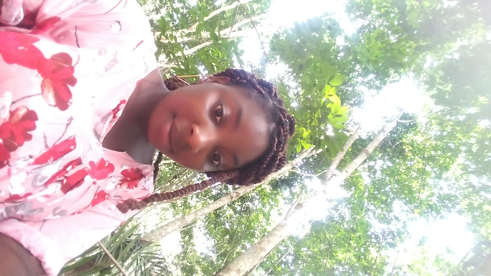
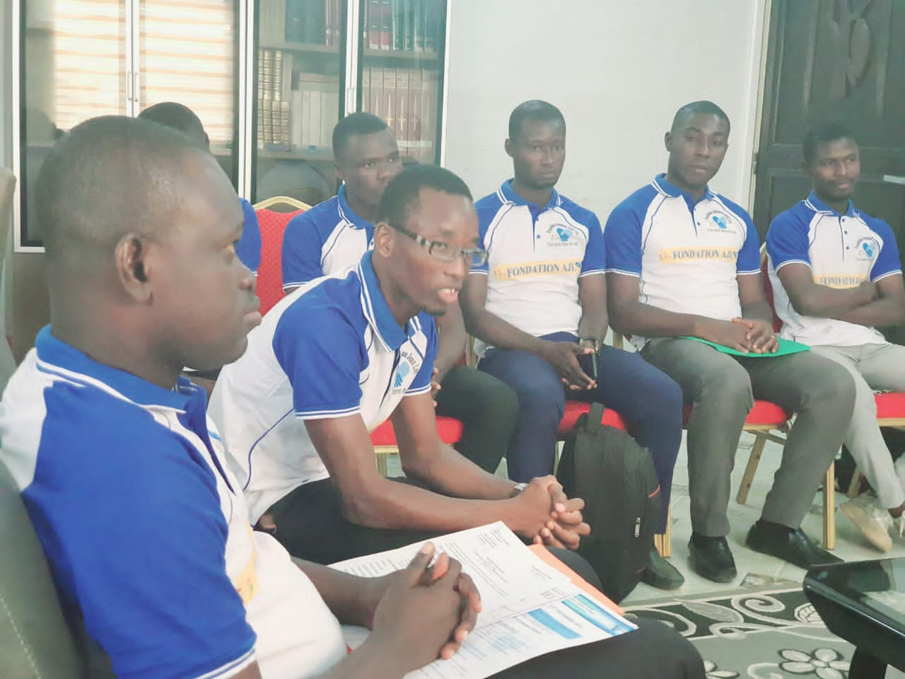

my academyc journey
I had a degree in English at the Felix Houphouet Boigny University, specializing in the civilization of English-speaking African countries. in 2017, I got the baccalaureate. Over time, I took training such as sexuality education and also web training.
MY EXPEIRENCE
MY VERY FIRST PROFESSIONAL EXPERIENCE WAS FOR ME AN UNFORGETTABLE EXPERIENCE. BOTH ON A PERSONAL AND PROFFESSIONAL LEVEL. BEING AT THE HEAD OF A COOMERCIAL AGENT ON THE PLATEAU WAS FOR ME AN OPPORTUNITY TO GET IN TOUCH WITH THE WORLD OF WORK, AS WELL AS TO VALUE B MY CAPACITY OF SPIRIT TEAM

extra professional activity
I am a member of a foundation called ajl. An apolitical structure which aims to do social work, help the most deprived. Dou I am the financial manager. Through the foundation I realized that together we can do the impossible and make people happy, with a simple gesture transform lives. 